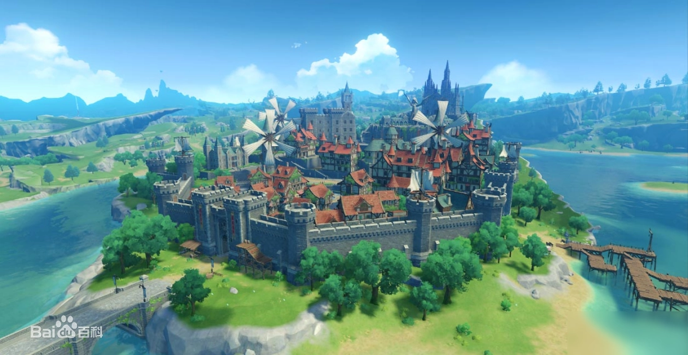
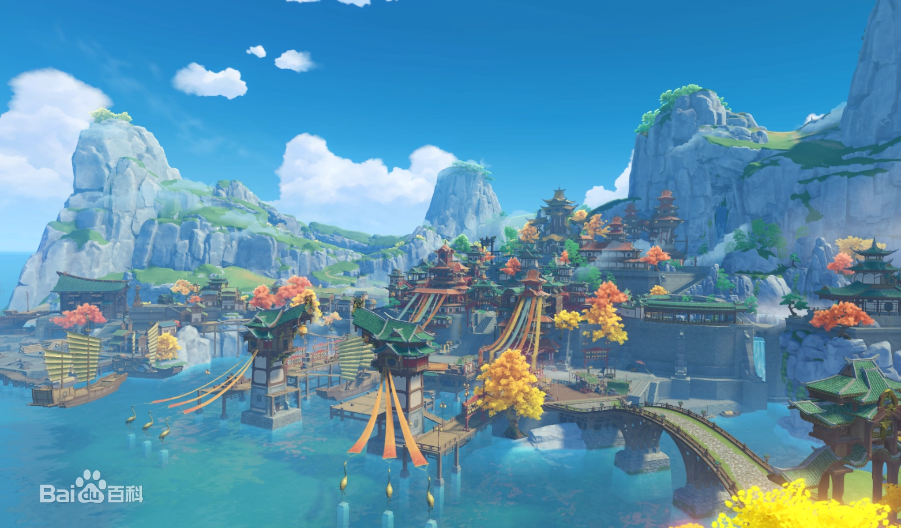
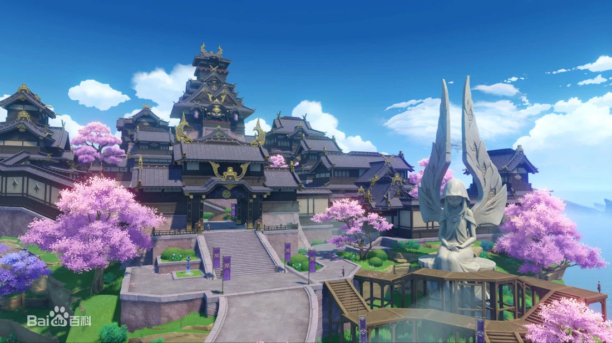

位于提瓦特大陆东北部的自由城邦。群山和广袤的平原间，自由之风携着蒲公英的气息吹拂过果酒湖，为坐落于湖心岛上的蒙德城送去风神巴巴托斯的祝福与恩泽 。
位于提瓦特大陆东方的富饶港湾。傲然矗立的山麓与石林、广袤的平原与生机勃勃的河滩共同构成了璃月的丰富地貌，在四季分明的气候下焕发出多彩的风华。山石奇景间，又埋藏了多少岩之魔神的古老馈等待着人们发掘呢 。
位于提瓦特大陆远东的封闭群岛。越过无尽的雷暴，踏上红枫与绯樱眷顾的诸岛，在环绕的砂堤、高耸的断崖与幽秘的山林之中，见证御建鸣神主尊大御所大人所追寻的永恒 。